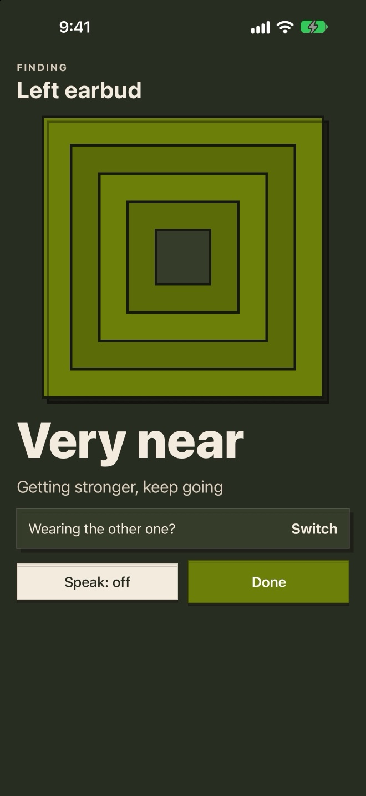
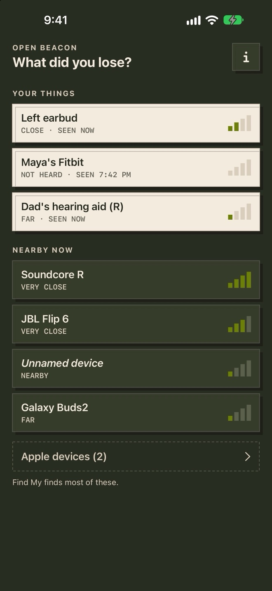
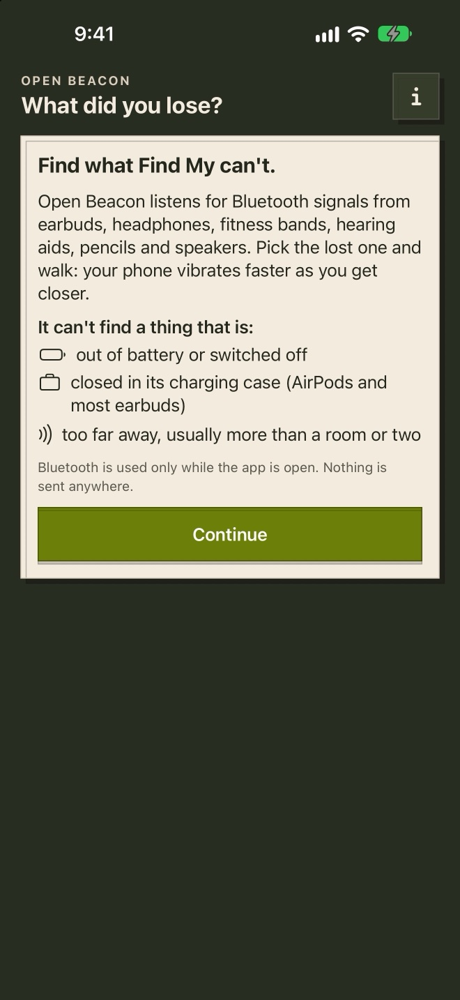

Open AppCo app #11
Waiting for Review
Open Beacon is waiting for Apple review.
Find lost earbuds and hearing aids by feel, sound or sight.
Await Apple review of version 1.0.0 (build 1).
Status checked 2026-10-15.
Follow the review status
The actual app
What it looks like.

Walk and feel it get closer.

Your things, by your names.

The limits, before you search.57 second device check
On a real iPhone.
On a real iPhone, silent: launch from the Home Screen, see what's nearby, find it as the word goes from Near to Very near, and go back Home.
Why this app exists
What people complained about, and what we changed.
We read 8,760 App Store reviews of 22 Bluetooth finder apps. These complaints kept coming up.
“The first thing that happens when you download it is it demands that you buy a membership/subscription for the app to even do its job.”
Find Air - My Device Tracker on the App Store
What Open Beacon does instead
It starts finding as soon as you allow Bluetooth. No paywall, account or trial.
“Gives you random numbers that mean nothing when trying to locate device”
Find Air - My Device Tracker on the App Store
What Open Beacon does instead
Five plain words from a smoothed signal, never a made up distance or percentage.
“didn't really show if I was “hot” or “cold””
Marco: Find Lost Bluetooth on the App Store
What Open Beacon does instead
Vibration speeds up, the screen fills and one big word changes as you get closer.
“I had to get my other hearing aid far enough away that it didn’t confuse the situation”
Wunderfind: Find Lost Device on the App Store
What Open Beacon does instead
With two of a pair, it finds the one farther from your phone. One tap switches.
“I would like the option to label all the ‘N/A’ devices so I can locate them in the future.”
Find My Lost Bluetooth Device on the App Store
What Open Beacon does instead
Save any device and give it your own name. It shows when it was last heard.
“if you wanted your device to beep or make a noise, you had to pay”
Wunderfind: Find Lost Device on the App Store
What Open Beacon does instead
Connected headphones and hearing aids can play a chirp.
“Ad pops up when you find things. What gives?”
Wunderfind: Find Lost Device on the App Store
What Open Beacon does instead
No ads.
“Does not work if device you are looking for has no power or if AirPods are still in the case. That is what the app tells you when it fails”
Device Tracker on the App Store
What Open Beacon does instead
What it can't find is on the first screen, before you search.
Follow the review status